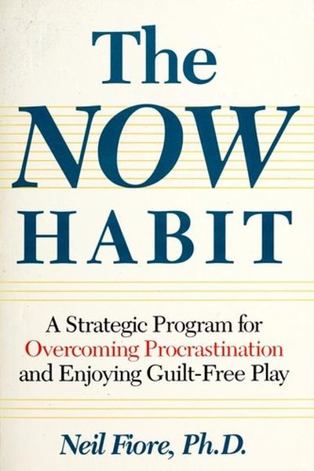

Library › Productivity
The Now Habit — Summary & Key Lessons

The classic anti-procrastination playbook — procrastination isn't laziness, it's a fear response. Here's the cure.
📖 OPEN THE FULL INTERACTIVE BREAKDOWN →🌐 Read it in Hindi, Hinglish, Gujarati, Tamil & 22 more languages — free, with audio.
💡 The Big Idea
Dr. Neil Fiore, a psychologist who treated procrastination for decades, reframes the problem: procrastination is not laziness or bad time management — it's a coping mechanism for fear (of failure, of judgment, of imperfection) and for the pressure of 'must.' His tools flip the psychology: the Unschedule (plan only fun, see the real time available), guilt-free play, the three Ps (pressure, perfectionism, procrastination), and starting anywhere for just a few minutes. When work stops feeling like a threat, it gets done.
🧠 The 5 Key Lessons
Lesson 1: Procrastination Is a Coping Mechanism, Not Laziness
The Problem
People don't procrastinate because they're lazy — laziness is comfortable, procrastination is miserable. It's a strategy the mind uses to escape anxiety: fear of failure ('what if it's bad?'), fear of success, fear of being judged, or perfectionism's cousin — fear of not being perfect. Understand the fear underneath and the 'laziness' dissolves.
📖 Example: Fiore describes clients who procrastinated on dissertations for years — brilliant people who dreaded the committee's judgment. Once they named the fear ('my work must be flawless'), the block began to crack. Read the full example →
⚡ Do this: Name the fear under your current procrastination in one sentence: 'I'm avoiding ___ because I'm afraid ___.' Write it down — naming it removes half its power.
Lesson 2: Escape the Three Ps
The Three Ps
Procrastination runs on a self-reinforcing loop of three Ps: Pressure (the 'must' of deadlines makes work feel like a threat), Perfectionism (the demand that results be flawless), and Procrastination itself (avoiding the threat). Pressure creates rebellion, perfectionism creates paralysis, and avoidance creates guilt — which creates more pressure. Break the loop at pressure first: 'must' becomes 'choose.'
📖 Example: Fiore's clients who reframed 'I MUST finish this report' into 'I CHOOSE to work on it for 25 minutes' reported immediate relief — the choice restored a sense of control, and the work began. Read the full example →
⚡ Do this: Rewrite your next 'must' as a choice: 'I choose to ___ because ___.' Notice the shift in your body — then start.
Lesson 3: The Unschedule: Plan Fun, Not Work
The Unschedule
Fiore's famous reversal: instead of planning your work (and guiltily squeezing in fun), plan only your non-work — meals, exercise, friends, hobbies — and leave the work time blank. The Unschedule does two things: it proves you have more free time than you think (killing the 'I have no time' excuse), and it makes work a choice you make in real time rather than a sentence you serve.
📖 Example: A graduate student Fiore coached planned a week of tennis, dinners and films — and discovered 40 genuinely free hours. Seeing the real numbers demolished his 'I'm so busy' identity and he finished his thesis chapter within weeks. Read the full example →
⚡ Do this: This weekend, build your Unschedule for next week: schedule ONLY non-work activities. Then work fits into the visible gaps — guilt-free.
Lesson 4: The Five-Minute Start
Starting
The hardest part of any task is the first three minutes — so Fiore prescribes a ridiculously small start: commit to just five minutes of the dreaded task. Five minutes is too short to trigger the fear response, and starting is the actual battle. Almost always, five minutes becomes twenty — because the anxiety evaporates once you're moving.
📖 Example: Fiore tells of a writer blocked for months who agreed to 'write for five minutes.' She wrote for two hours that night — and finished her manuscript in weeks. The five-minute promise bypassed the inner judge. Read the full example →
⚡ Do this: Next time you catch yourself avoiding, set a timer for 5 minutes and start the ugly first step. When it rings, you may stop — but note what usually happens.
Lesson 5: Guilt-Free Play: Reverse the Psychology
Guilt-Free Play
Procrastinators treat leisure as stolen time — which poisons both work and rest. Fiore's prescription: take guilt-free play seriously — schedule it, enjoy it fully, and refuse to apologize for it. Paradoxically, people who play without guilt work better: rest restores energy, and the absence of guilt removes the 'I've already failed' spiral that triggers more avoidance.
📖 Example: Fiore's data point: his clients who added real recreation — sports, music, walks — reported sharper focus and less avoidance, while the 'all work, no play' group ground to a halt. Play isn't the reward for work; it's the fuel for it. Read the full example →
⚡ Do this: Schedule one guilt-free play block this week — and during it, no work thoughts allowed. Say 'I'll be fully present here' and mean it.
✅ 5-Step Action Plan
- Write the fear under your current avoidance — in one sentence.
- Convert one 'must' into a choice, out loud.
- Build your Unschedule: plan only non-work for a week.
- Start the dreaded task with a 5-minute timer.
- Schedule guilt-free play — and actually play.
💬 Best Quotes from The Now Habit
- “Procrastination is not a matter of laziness; it's a way of coping with the anxiety of the task.”
- “You can't build self-esteem by waiting for success — you build it by taking action.”
- “Start with the hardest part? No — start with any part, for five minutes.”
Interactive version: mark lessons as read, listen in your language, share quote cards.